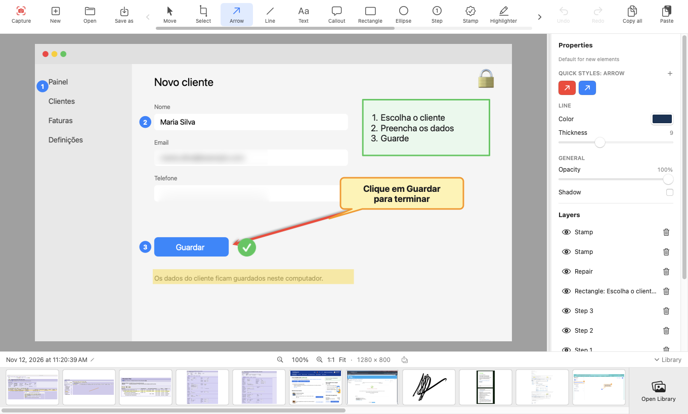
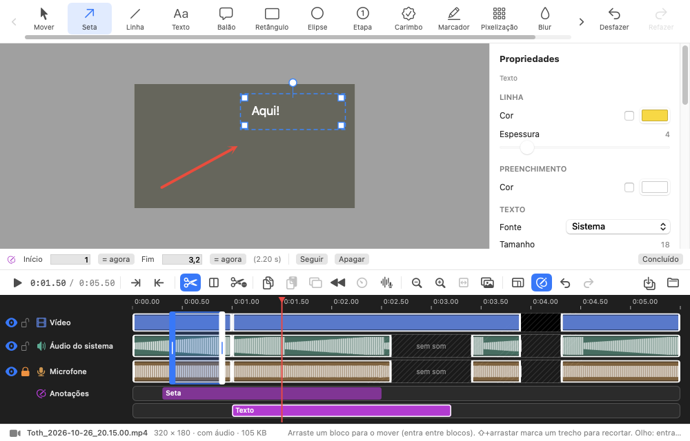

T O T H
Capture. Annotate. Record. Edit.
One Mac app that does the work of four, entirely on your computer. No account, no cloud, no telemetry. Free software (MIT).
macOS 15 or later · Apple Silicon and Intel · version 0.6.8 · all releases

🧩 One app instead of four
Capturing, annotating, recording and editing video usually live in different apps, each with its own license and its own cloud. Toth puts the four tasks in one, and what comes out of one goes straight into the next.
| Task | Usually takes… | Toth |
|---|---|---|
| 📸 Capture | a screenshot app (region, window, scrolling page) — Shottr, CleanShot X, Snagit… | ✓ |
| ✏️ Annotate | an annotation editor (arrows, text, steps, pixelate, repair) — Skitch, Monosnap… | ✓ |
| 🎥 Record | a screen recorder (area or window, system audio, microphone) — QuickTime, Kap, Loom… | ✓ |
| ✂️ Edit video | a video editor (cuts, timed annotations, music, narration, GIF) — iMovie, ScreenFlow… | ✓ |
| 🔒 Privacy | trusting that nothing leaves the computer | 100% local |
| 💶 Price | three or four licenses | Free · MIT |
Toth covers the essentials of each task; it has no automatic captions, effects or transitions, and does not share online (by design). All trademarks belong to their owners; Toth is not affiliated with or endorsed by those companies.
What only Toth puts together
Not a list of tools: the way they connect.
Capture → annotation → video, without switching apps
The same toolbar annotates an image and a video. An arrow over a frame has a start and an end and can follow what moves.
Nothing is destructive
Pixelate, blur, repair, cut-outs, video cuts: layers you change or remove tomorrow. The original is never altered; everything reopens as you left it.
Image text: copy and edit
Recognizes the text in any capture on the Mac, no network. ⌘C copies; a double-click makes it editable in the same style: size, color, bold and the closest font, with the original erased underneath.
Real repair and selection
Fill removes an element from its surroundings; Clone covers it with another part. The wand selects by color, and the area lifts, duplicates, erases or fills. Paint recolors a region with one click, and Cut Out removes a band from the middle and joins the two parts.
The canvas follows the content
Drag an arrow out of the image and the area grows; bring it back and it shrinks. Move, rotate and resize the capture itself without damaging it.
Pixel sharpness
Capture and recording at native resolution, 1:1 zoom in screen pixels, high-bitrate H.264. What you see is what you keep.
Verifiable privacy
The only network request is the update check (which you can turn off), verified by SHA-256 and signature. The code is open.
Capture
Region with a frozen screen and automatic suggestion of the element or window (just that window, even when covered), with window shadows, whole page by scrolling, full screen, screen text (OCR) and clean background. Global shortcut ⌃⇧4.
Annotate
Arrows and lines (straight or curved), text, callouts, shapes, numbered steps, stamps, highlighter, pixelate, blur, repair, Paint, Cut out and image text. Quick styles per tool, select area, rotate, align, group, layers.
Record
Area or window to MP4 (H.264 + AAC), system audio and your choice of microphone on separate tracks, pause and resume.
Edit video
Frame-exact cuts, draggable blocks, annotations with a start and an end, music, narration, volume and fade, speed per span. MP4, GIF or audio only.
Organize
Library with search by name, date, annotation text and text inside the image (local OCR). Named captures, a folder of your choice, export with ⌘E.

The video editor
- Three lanes (video, system audio, microphone) plus music, narration and annotations.
- Timed annotations: arrows, text, pixelate… with a start and an end, which can follow a moving region.
- Non-destructive: the original video never changes; undo, redo, and the edit returns when you reopen.
- Output: full MP4, animated GIF or audio only (M4A).
What's new in 0.6.8
Captures bring the window shadows, just as you see them on screen, and the area selector works on top of apps that will not give way.
Shadows as on screen
Captures bring the window shadows, just as you see them: a dialog over another window comes out with its shadow.
Window with its shadow
The window suggested in the selector comes out with its shadow around it, on a transparent background. Turn it off in Preferences for the exact size.
Selector on top of everything
The selector receives the mouse and keyboard even over a virtual machine or a full-screen game, and Esc always cancels.
Uninstall with nothing left
From 0.6.6: Preferences → “Uninstall Toth…” removes the app, preferences, caches and macOS permissions. Your captures stay unless you ask otherwise.
Crashes, nothing sent
From 0.6.6: If Toth crashes, it tells you on the next launch and shows the report macOS saved. You decide whether to open a GitHub issue, already filled in with a summary.
Last tool remembered
From 0.6.6: A new capture opens with the last tool you used, even after reopening Toth.
A free alternative to Snagit, CleanShot X and Shottr
If you are looking for a Mac screenshot app with no license, no account and no cloud, Toth covers the essentials of these three. We also say when the other one is the right choice.
Toth or Snagit
What Toth does too: region, window and scrolling capture, numbered steps, recognized and editable text, Cut out, quick styles, screen recording and video cuts. Free and open source.
Stay with Snagit if you need Windows, ready-made templates and step-by-step guides, or direct sharing to online services and teams.
Toth or CleanShot X
What Toth does too: frozen-screen capture, covered windows, scrolling, clean background without icons, screen text (OCR), recording to MP4 or GIF. It also has a video editor with timed annotations.
Stay with CleanShot X if you want cloud share links, screenshots pinned floating on the screen or decorative backgrounds for social media.
Toth or Shottr
What Toth does too: quick capture by shortcut, scrolling, local OCR and annotations. It adds editing you can reopen (nothing is destructive), Repair, screen recording and a video editor.
Stay with Shottr if you want the smallest, lightest app possible, or you measure pixels and pick screen colors every day.
Comparison made in good faith in November 2026; the other apps evolve, so check their sites. All trademarks belong to their owners; Toth is not affiliated with or endorsed by those companies.
Install
macOS 15 or later. Apple Silicon and Intel.
Download
Download Toth-0.6.8.zip, unzip and drag Toth.app to Applications.
First launch
The app is not yet notarized: macOS shows “Toth Not Opened”. Click Done, go to System Settings → Privacy & Security → Security → Open Anyway.
Guided permission
Toth checks Screen Recording and, if missing, guides you in 3 steps. It is the only required permission; the microphone only if you turn it on while recording, and Accessibility is optional (exact element suggestion).
Captures are saved in ~/Pictures/TothCapture (the folder can be changed in Preferences). Updates are verified by SHA-256 and signature and can be turned off in Preferences. Uninstall: Preferences → “Uninstall Toth…” removes the app, preferences, caches and permissions, leaving nothing behind; your captures stay unless you ask otherwise.

By the same author: Udjath
Switch your Mac's display resolution from the menu bar, ultrawide included, with automatic revert. Free and open source. Meet and download Udjath
☕ Enjoying Toth?
The project is free and open, and will stay that way. If you would like to help keep it going, you can support it voluntarily. Nothing in the app depends on it.
♥ Support on PayPal